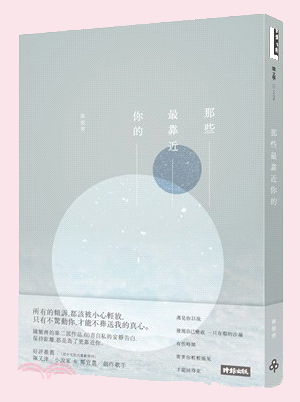
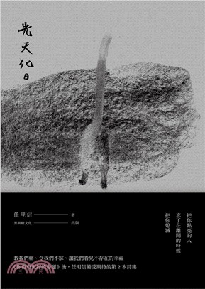
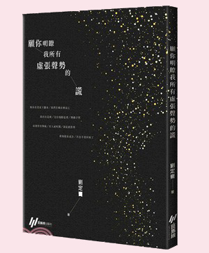

陳繁齊 介紹 IG： dyingintherain

陳繁齊，1993年生的台北人，國北教語創系畢業。喜歡海大過於山，喜歡貓但對貓過敏。
現專職文字工作，創作領域包含詩、散文、歌詞，出版作品有散文集《風箏落不下來》，詩集《下雨的人》、《那些最靠近你的》、《脆弱練習》。
任明信 介紹 FB: 任明信

任明信，十一月生，高雄人，中正大學經濟學系，東華大學創作暨英美語文研究所畢。
喜歡夢，冬天，寫詩，節制地耽溺。著有詩集《你沒有更好的命運》、《光天化日》。
劉定騫 介紹 IG： dingcianliu

劉定騫/ 騫言，一九八六年生。
尚未形塑完成就冷卻的容器。 仍試著寫下字。偶爾也是劇場與鏡頭前的演員。 喜歡按下快門的聲音。 著有詩集《失對白》、《願你明瞭我所有虛張聲勢的謊》。
|  |  |  |
|
遇見你以後 發現自己變成 一只有瑕的沙漏 有些時間 需要你輕輕搖晃 才能回得來 繼《下雨的人》之後， 陳繁齊的第二部作品，60首自私的安靜告白，保持距離，都是為了更靠近你。 |
教我們痛、令我們不寐、讓我們看見不存在的幸福。 繼《你沒有更好的命運》後，任明信備受期待的第二本詩集。 《光天化日》分為三輯。 輯一為情詩，書寫愛戀中的情感群像，從關係中的相遇到分離，從甜蜜到酸楚。 輯二有自我內部的辯證，現實生活中的拉鋸，和對家國社會的關懷。 輯三則是對世界最純粹的想望，對生命的真實呼喊。 |
劉定騫第二本詩集《願你明瞭我所有虛張聲勢的謊》，共分為五輯：失物招領、無人之境、逢魔之時、夜晚都知道、歲月的歌。 脈絡是在整理成冊的時候察覺的，才理解這些詩原來是我這兩年來走過的狀態痕跡。 失去親人、情感裡的混亂、家庭的衝突、自我懷疑的絕望，於是開始有意識無意識的討探命運與生命的關聯。 這些日子以來，我無時無刻都在對話，與外界、他人、自我和時間對話，試圖去理解生命的連結。 對他人有謊，對自我是否一定真實？ 為了與世界維持運轉，我們用了多少謊去說服自己？ |